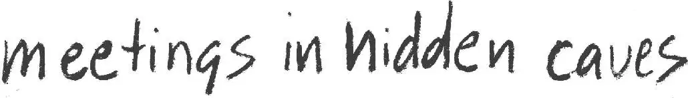

The water grew shallow again. Then they were on dry land. The ninjas lowered Jack and Annie to the ground.
“Thanks,” said Annie.
“Thanks,” said Jack.
Squeak, said the mouse.
The ninjas said nothing, but they looked around.
Jack looked around, too. A full moon was rising in the sky. Dark rocks dotted the side of the mountain.
Then the ninjas started moving. They went silently up the slope, between the rocks.
Jack and Annie followed them. Jack wasn’t afraid of the ninjas now. In fact, he was starting to like them. Maybe they really could help find Morgan.
The ninjas moved silently. But Jack and Annie made plenty of noise.
They panted as they climbed the rocky hillside. Their wet sneakers made squishy sounds.
Suddenly the ninjas froze. Jack could see their eyes darting around. Voices were coming from the valley below. Jack saw torches flaming in the mist.
The ninjas started moving faster. Jack and Annie hurried after them.
“Who’s carrying the torches?” Annie asked.
Jack was too out of breath to speak. He also didn’t have an answer.
They came to a pine forest. Night birds called out. Wind rattled the branches.
The ninjas moved like ghosts through the forest. They appeared and disappeared, through moonlight and shadows.
Jack and Annie struggled to keep up.
Finally the ninjas came to a stop.
One ninja held out his hand, as if to say, Wait. Then both ninjas stepped away into the shadows of the trees. And were gone.
“Where did they go?” said Annie.
“I don’t know,” said Jack. “Maybe the book can tell us.”
He pulled the ninja book out of his pack.
He turned the pages until he came to a picture of a cave.
By the light of the full moon, he read:
Sometimes ninjas held meetings in hidden mountain caves to plan secret missions.
“Oh man,” said Jack, “I bet they went inside a hidden cave.”
He pulled out his notebook and pencil. He wrote:

Jack turned the page. He stared at a picture of a ninja sitting on a mat. He read:
Ninjas took orders from a ninja master. The master was a mysterious wise person who knew many secrets of nature.
“Wow,” whispered Jack.
Just then the two ninjas returned. Jack quickly put his books away.
The short ninja motioned for Jack and Annie to follow. In the shadows was the entrance of a dark cave.
“What’s in there?” Annie whispered.
“The ninja master,” Jack whispered back.